Editores de texto en ambiente grafico
En este punto se anexarán los editores de texto que seleccionaron para instalar en la distribución Ubuntu en ambiente gráfico. Los editores de textos elegidos específicamente son: Sublime text y Atom
1. Instalar Sublime text
Para poder instalar este editor de texto es necesario abrir el centro de aplicaciones “App center” de Ubuntu.
Luego Escribe Sublime text en el buscador.
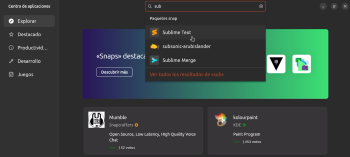Despues selecciona el icono de la aplicación, y le das al botón de instalar.
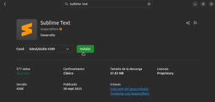Ya habiendo instalado el editor, al abrirlo te aparecerá la siguiente interfaz donde ya podrás empezar a escribir tus archivos de texto.
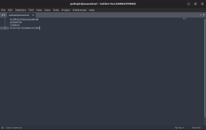2. Personalizacion del editor de texto
SI bien la enumeración de las lienas ya viene por defecto en el editor. Si quieres tener hightlights rápidos y sencillos sigue los siguientes pasos:
1.Entre la pestaña “view ” que está en la barra superior.
2.busca la opción “Sysntax”
3. luego selecciona el lenguaje que desees y listo.
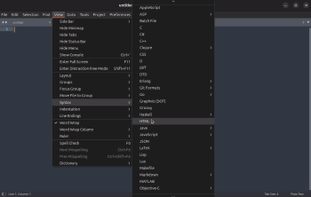Para este caso elegimos la sintaxis hmtl como se puede ver en la imagen de abajo.
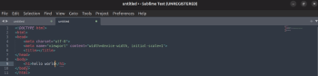3. Instalar Paquetes o plugins
Antes de poder instalar paquete en Sublime text y personalziar aun más tu editor de texto,. Primero debes abrir la “comnad palette” desde la pestaña tools en la barra superior o con la combinación de tecla Ctrl + Shift + p
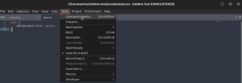Luego de abirr la paleta de comandos, escribe el comando “Package Control:install”
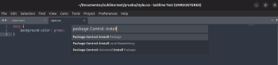Al hacerlo te abrir una pestaña en tu editor que te confirmara que estas en instalador de paquetes; y ya solo queda buscar el paquete o plugins que deseas instalar.
Para este caso, vamos a instalar el plugin de “Emmet” en nuestro editor de texto.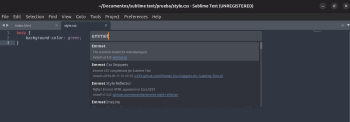
AL seleccionar el plugin que desees instalar, te aparecerá la siguiente ventana emergente que te pedirá confirmar si quieren instalar el paquete o no
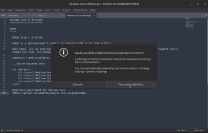A continuación, se anexa una imagen para ejemplificar la función del paquete instalado “Emmet”
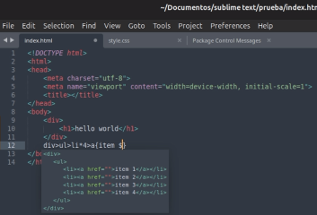1.1 Descargar Atom
Para descargar el segundo editor de texto que elegimos (Atom) Debemos de buscarlos desde su página web oficial. Abre tu navegador y busca “Atom editor de texto” la primera opción suele ser la página correcta.
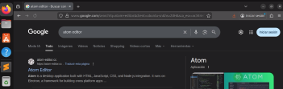Ya dentro de la página, simplemente le damos al botón de descargar. Esto nos llevará al GitHub de Atom donde se encuentran alguna de las versiones y en diferentes formatos
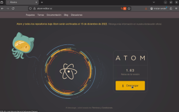Ya en github, busca la opción de descarga “atom-amd64.deb” que es el tipo de archivo que maneja la distribución de Linux Ubuntu.
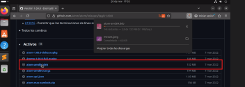2.1 Instalación de atom
Ya habiendo descargado el .deb de atom, entra a tu carpeta de descargas y dale click derecho y “abrir con centro de aplicaciones” para instalar el editor de texto.
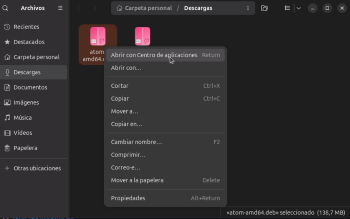Al hacer lo anterior, Se abrira el centro de aplicaciones y te dará la opción de instalar el editor
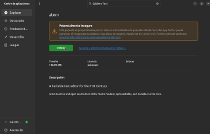Terminada la instalación ya podrás abrir tu editor de texto para empezar a escribir en el.
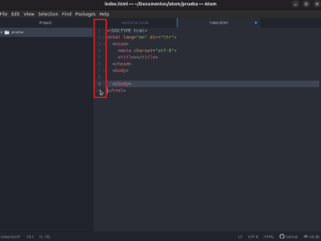Instalar paquetes
2.2 Instalar paquetes
Al igual que el editor anterior, Atom ya viene con la enumeración de líneas por defecto y también con algunas highlights por defecto, por lo que en este punto nos vamos a centrar en la instalación de paquetes.
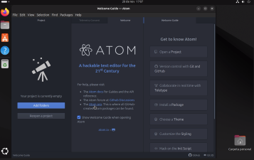Ya dentro del editor, busca la pestaña settings y busca la opción “Install package”
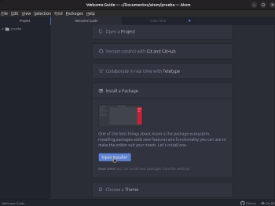Dentro del instalador de paquetes, busca el paquete que gustes e instálalo.
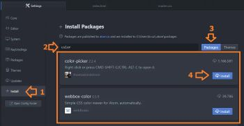A continuación, se anexará el link que llevará a la documentacion del punto especifico: link
Consola
En este apartado anexaremos la instalación de los editores de texto en consola en la distribución de Linux Fedora server. Específicamente instalaremos los editores vim y emacs.
1.3 Instalar vim
EL primer editor de texto que vamos a probar es vim, para instalarlo escribe comando: Sudo dnf Install vim. Como anteriormente ya lo habiasmo instalado aparece como en la imagen de abajo.
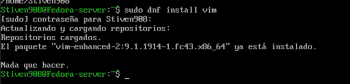Pero si aún no lo tienes instalado, te aparecerá un mensaje diciéndote si quieres instalarlo donde tienes las opciones: yes/y o no/n
2.3 Abrir vim
Para abrir el editor de vim, tienes que escribir el comando: vim “nombre-de-archivo.txt” como se muestra en la siguiente imagen.
Al abrir el editor veremos la siguiente pantalla, en ella podrás empezar a escribir todo lo que quieras en ella archivo.txt que hayas abierto.
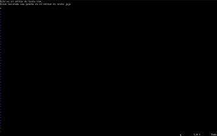Para salir y guarda todos los cambios tienes que hacer lo siguiente: presiona la tecla “Esc” luego escribe el comando “:wq” y listo.
3.3. Instlar Emacs
Para abrir Emacs Escribe el siguiente comando: Emacs “nombre-de-archivo.txt” Como aparece en la imagen de abajo.
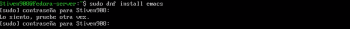Luego de colocar tu contraseña (Bien) te dara nuevamente la opción de instalar el editor, tu escribes yes si quieres o no.
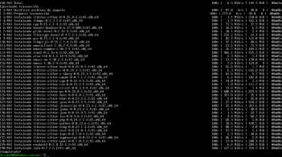4.3 Abrir Emacs"
Para abrir Emacs Escribe el siguiente comando: Emacs “nombre-de-archivo.txt” Como aparece en la imagen de abajo.
Al abrir Emacs, ya nos damos cuenta de una cosa, una especie de simulación de interfaz gráfica mucho más bonita que el anterior editor de texto. Que al igual que los ambiente grafico se les puede instalar paquetes.
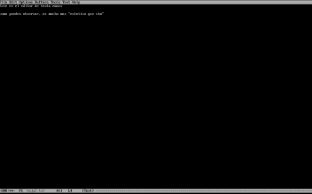Para cerrar el editor tienes que hacer la siguiente combinación de teclas: Ctrl + x y luego Ctrl + c
Emacs te pregunta si quieres guardar o los cambios, tú respondes “yes” o “no” respectivamente.
A continuación, se anexará el link que llevará a la documentacion del punto especifico: link